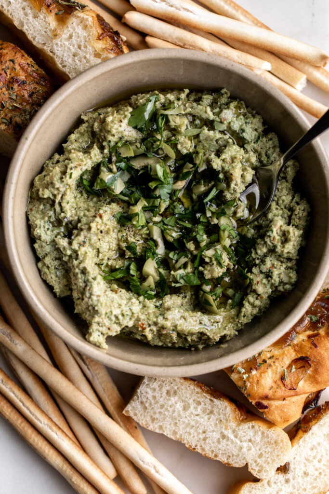

Green Olive Tapenade

Tapenade is a garlicky and salty dip from Provence made from olives, garlic, anchovies, almonds and capers.
This recipe is based on one from chef Anne Willan. I learned to make it while helping her put together the menu for her husband’s birthday party a few years ago. I’m not usually that partial to olives but I love this piquant spread.
Ingredients
- 1 slice white bread
- 2 garlic cloves
- 1/2 cup pitted green olives
- 2 oil-packed anchovy fillets
- 1/3 cup almonds
- 1 tablespoon oil packed capers
- 2 teaspoons chopped flat-leaf parsley
- 1/4 cup extra-virgin olive oil
- 2 teaspoons lemon juice
- freshly ground black pepper
Steps
- Add the bread, garlic, olives, anchovies, almonds, capers and parsley to the bowl of a food processor.
- Pulse until the ingredients are coarsely chopped. Then, while the food processor is running, slowly add the olive oil, until the tapenade becomes smooth. Stir in the lemon juice and season with pepper.
- Serve at room temperature with toasted baguettes or crackers. Store in an airtight container topped with a thin layer or olive oil for up to a week.